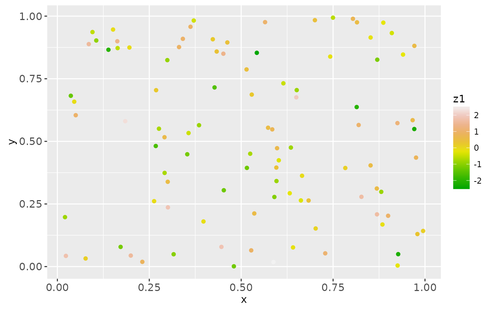
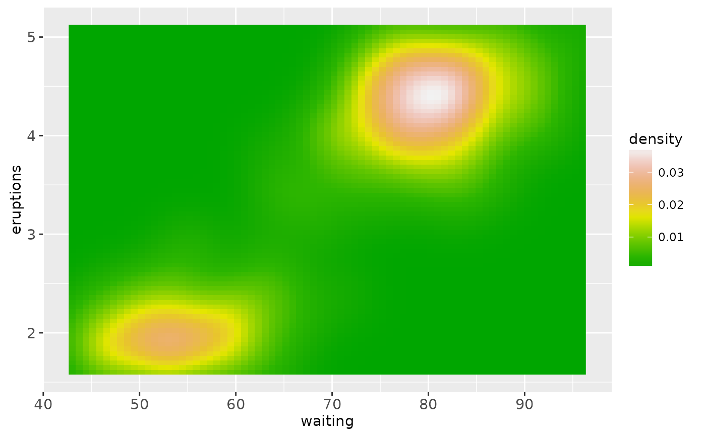

scale_*_gradient creates a two colour gradient (low-high),
scale_*_gradient2 creates a diverging colour gradient (low-mid-high),
scale_*_gradientn creats a n-colour gradient.
Usage
scale_colour_gradient(
...,
low = "#132B43",
high = "#56B1F7",
space = "Lab",
na.value = "grey50",
guide = "colourbar"
)
scale_fill_gradient(
...,
low = "#132B43",
high = "#56B1F7",
space = "Lab",
na.value = "grey50",
guide = "colourbar"
)
scale_colour_gradient2(
...,
low = muted("red"),
mid = "white",
high = muted("blue"),
midpoint = 0,
space = "Lab",
na.value = "grey50",
guide = "colourbar"
)
scale_fill_gradient2(
...,
low = muted("red"),
mid = "white",
high = muted("blue"),
midpoint = 0,
space = "Lab",
na.value = "grey50",
guide = "colourbar"
)
scale_colour_gradientn(
...,
colours,
values = NULL,
space = "Lab",
na.value = "grey50",
guide = "colourbar",
colors
)
scale_fill_gradientn(
...,
colours,
values = NULL,
space = "Lab",
na.value = "grey50",
guide = "colourbar",
colors
)Arguments
- ...
Other arguments passed on to
discrete_scaleto control name, limits, breaks, labels and so forth.- low, high
Colours for low and high ends of the gradient.
- space
colour space in which to calculate gradient. Must be "Lab" - other values are deprecated.
- na.value
Colour to use for missing values
- guide
Type of legend. Use
"colourbar"for continuous colour bar, or"legend"for discrete colour legend.- mid
colour for mid point
- midpoint
The midpoint (in data value) of the diverging scale. Defaults to 0.
- colours, colors
Vector of colours to use for n-colour gradient.
- values
if colours should not be evenly positioned along the gradient this vector gives the position (between 0 and 1) for each colour in the
coloursvector. Seerescale()for a convenience function to map an arbitrary range to between 0 and 1.
Details
Default colours are generated with munsell and
mnsl(c("2.5PB 2/4", "2.5PB 7/10"). Generally, for continuous
colour scales you want to keep hue constant, but vary chroma and
luminance. The munsell package makes this easy to do using the
Munsell colour system.
See also
seq_gradient_pal for details on underlying
palette
Other colour scales:
scale_colour_brewer,
scale_colour_grey,
scale_colour_hue
Examples
df <- data.frame(
x = runif(100),
y = runif(100),
z1 = rnorm(100),
z2 = abs(rnorm(100))
)
# Default colour scale colours from light blue to dark blue
ggplot(df, aes(x, y)) +
geom_point(aes(colour = z2))
# For diverging colour scales use gradient2
ggplot(df, aes(x, y)) +
geom_point(aes(colour = z1)) +
scale_colour_gradient2()
# Use your own colour scale with gradientn
ggplot(df, aes(x, y)) +
geom_point(aes(colour = z1)) +
scale_colour_gradientn(colours = terrain.colors(10))

# Equivalent fill scales do the same job for the fill aesthetic
ggplot(faithfuld, aes(waiting, eruptions)) +
geom_raster(aes(fill = density)) +
scale_fill_gradientn(colours = terrain.colors(10))

# Adjust colour choices with low and high
ggplot(df, aes(x, y)) +
geom_point(aes(colour = z2)) +
scale_colour_gradient(low = "white", high = "black")
# Avoid red-green colour contrasts because ~10% of men have difficulty
# seeing them